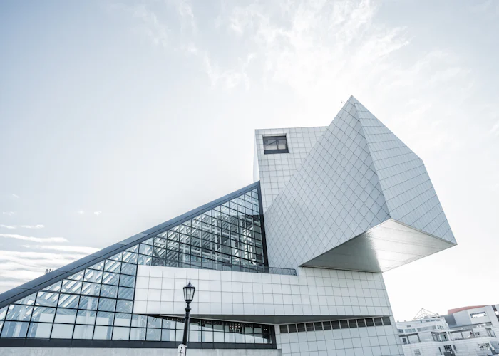
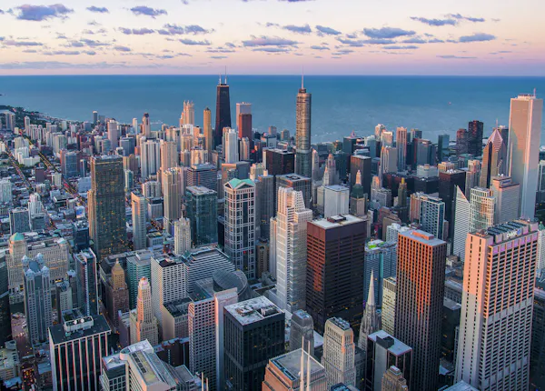
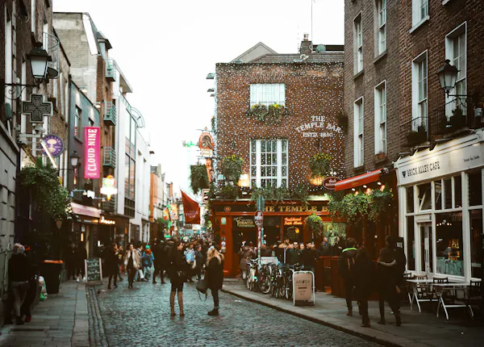
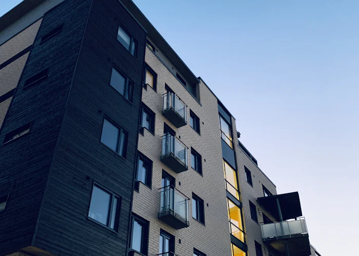
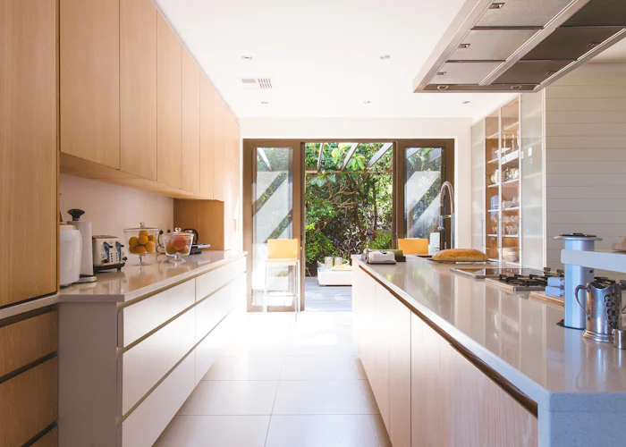
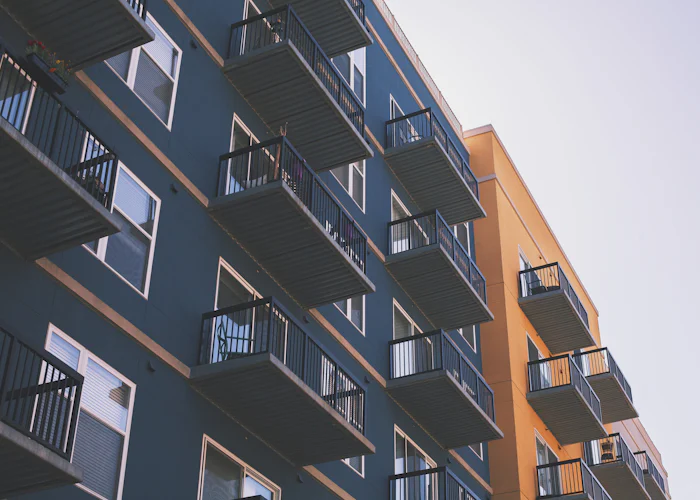

A curated selection of our most significant commissions across residential, commercial, and civic typologies. Explore how we turn constraints into iconic architectural expressions.






"We never impose a signature style onto a landscape. Instead, we spend weeks studying the solar paths, wind patterns, and geological history to let the site dictate the structural form."
"Engineering shouldn't be hidden behind drywall; it should be celebrated. We collaborate closely with structural engineers to expose the beauty of how a building actually stands up."
"A building is not finished when the client moves in. It is finished when it returns to the earth. Every material we select is evaluated for its 100-year lifecycle and eventual recycling."
Our studio is currently accepting select commissions for the upcoming year. Connect with our lead architects to discuss your vision.